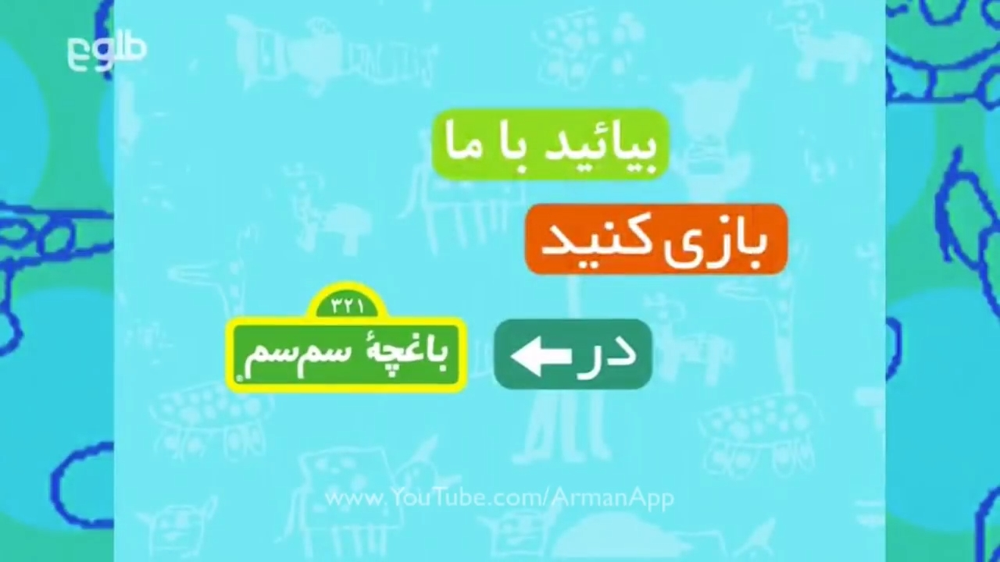

بيايد با ما بازی کنيد در باغچهٔ سمسم
(Dari)
(3/104)

Title:
بيايد با ما بازی کنيد در باغچهٔ سمسم
Seasons Dubbed: 3
Aired on: Tolo
Note: The episodes are
severly shortened.
WATCH
Seasons 1-3
(3 episodes)
archive.org